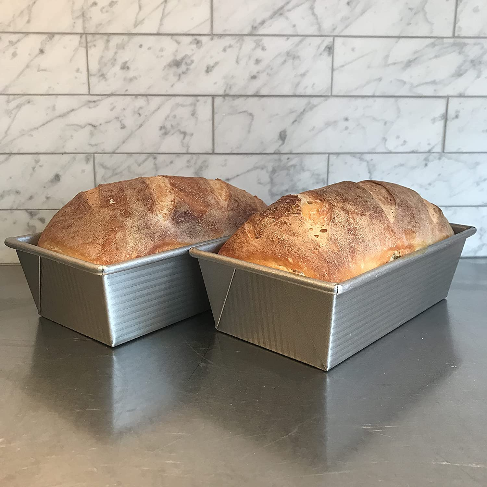

White Loaves

Amazing recipe for two white loaves that are easy to make. You will never need to buy bread again.
You'll love this vegan recipe and won't be hurting animals by making it.
- 496g flour
- 124g whole wheat flour
- 435g water at 30°C
- 12g salt
- 4g yeast
- Put water yeast and salt into a 6qt round translucent Cambro
- Mix around water and let sit for a couple minutes
- Add flour and mix until shaggy dough forms
- Let sit for 30 minutes and then knead dough using dough hook method
- After another 30 minutes fold dough
- Fold dough 3 more times using corkscrew method every 30 min
- After last fold let sit for an hour
- Shape dough into two loaves and proof in loaf pans for approximately an hour
- Begin preheating oven to 210°C 15 min into proofing time
- Bake for 20 min and then gently cover with tinfoil and bake for another 10-15 min